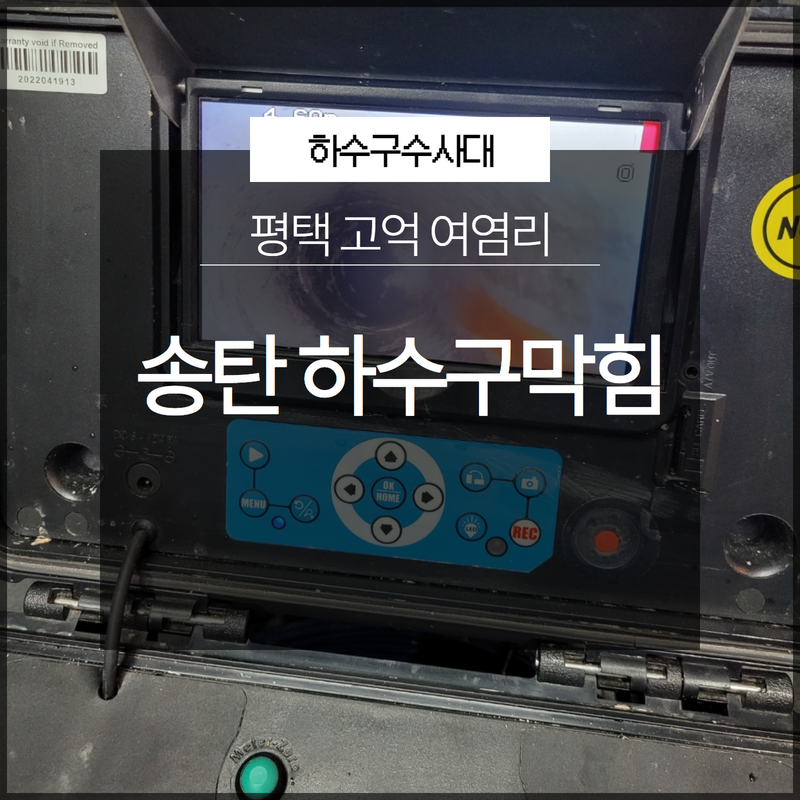
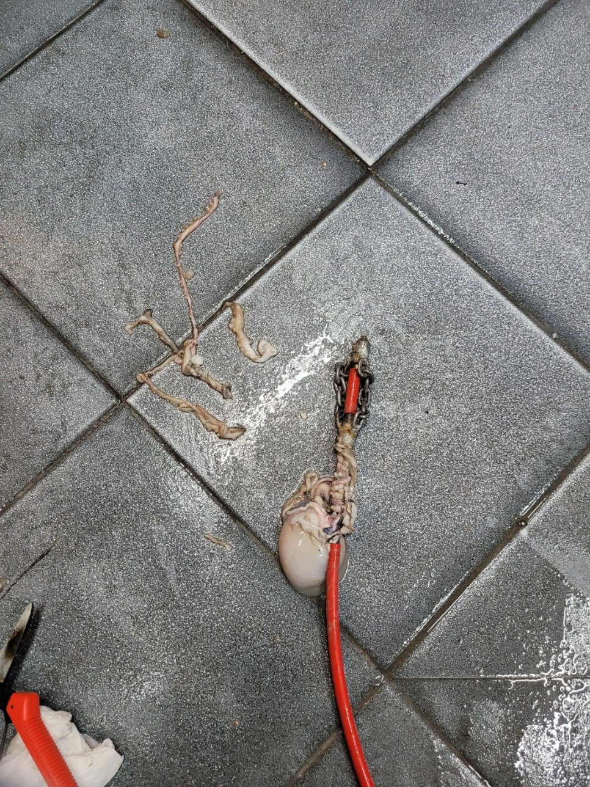
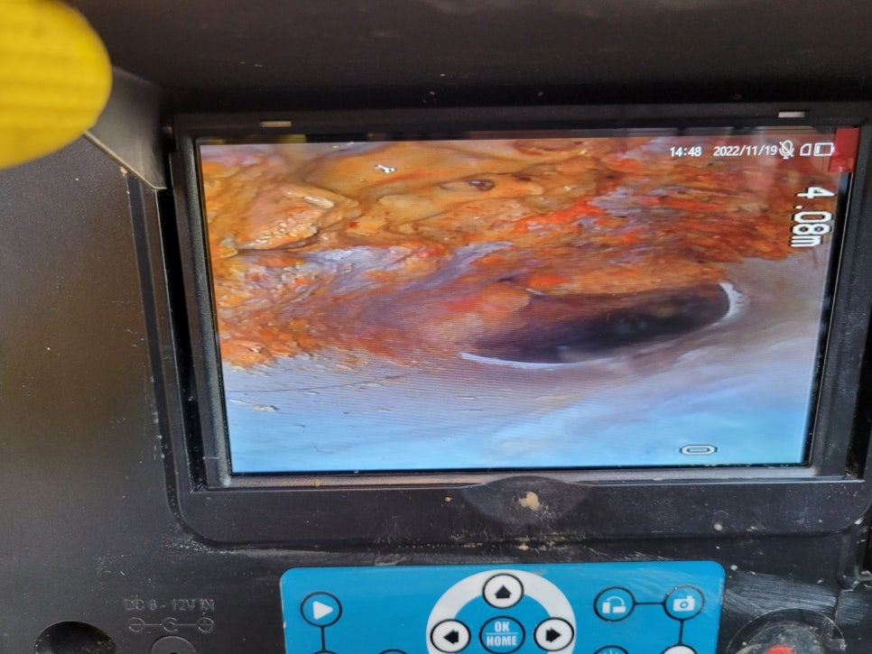
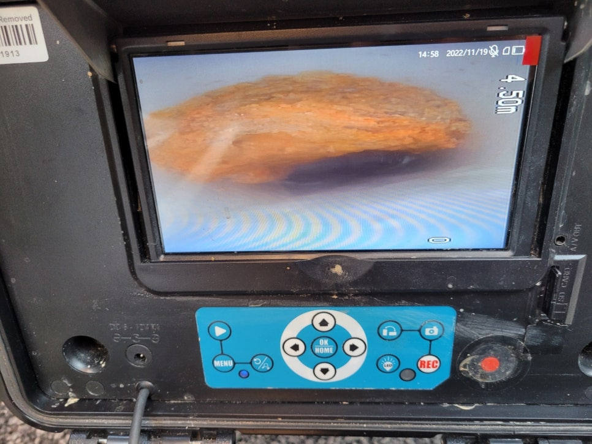
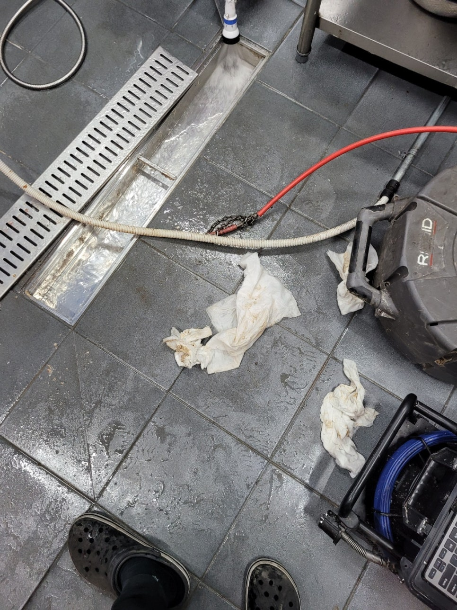
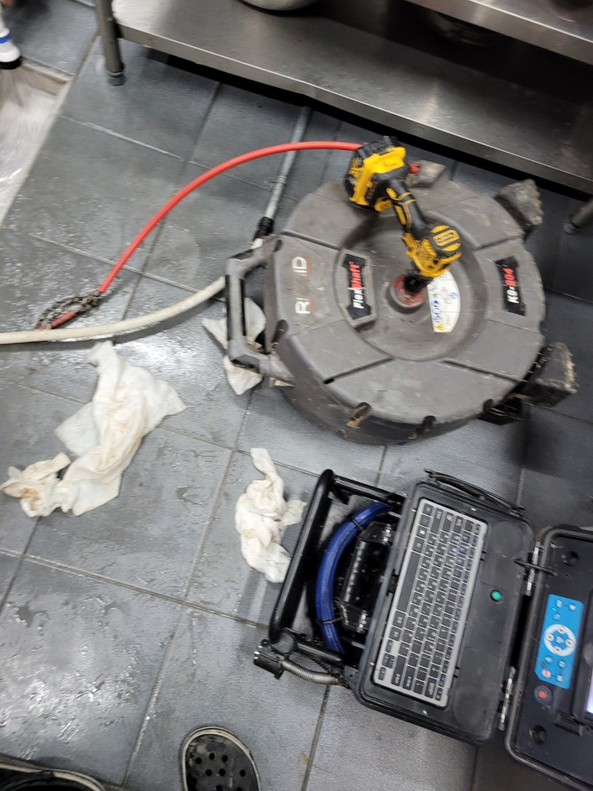
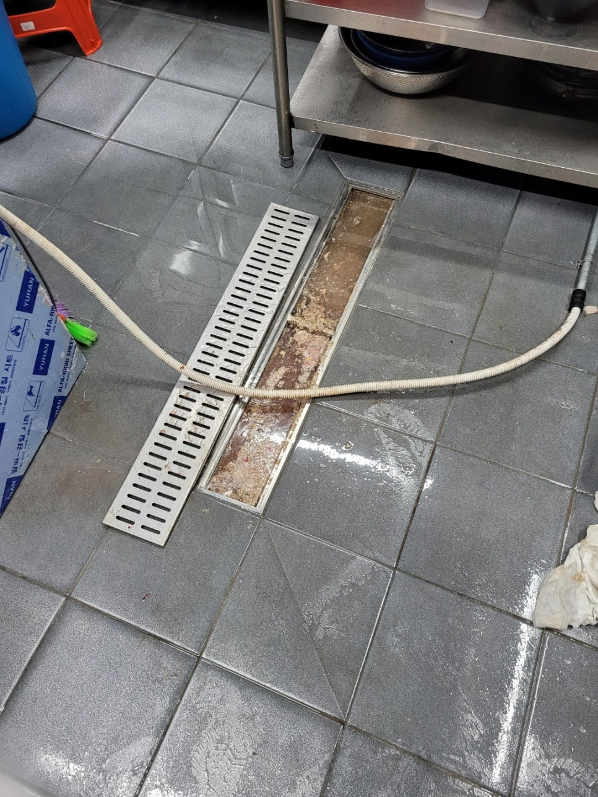

🏠 평택 송탄하수구막힘 고덕 여염리 배관내시경으로 확실한 원인 파악!
평택 싱크대막힘 전문 시공 후기

📋 작업 개요
- 위치: 평택
- 서비스 유형: 싱크대막힘, 하수구막힘, 배관막힘, 맨홀막힘, 역류해결, 고압세척
- 작업 일시: 2022. 12. 12. 23:20
- 업체명: 하수구수사대 (010-5615-2118)
🔍 문제 상황
안녕하세요 하수구수사대입니다:)
이번에 방문한 현장은 평택 송탄하수구막힘 고덕 여염리에 있는 한 식당으로 역류가 발생을 하게 되면서 급하게 연락을 주신 곳이었습니다. 모든 상황이 마찬가지이겠지만 급한 상황에서는 보통 사소한 부분들이나 주위를 둘러보는 것이 쉽지 않다고 할 수 있습니다. 또한 급한 일이 해결이 되고 나면 자연스럽게 평소처럼 습관적으로 생활을 하게 되는 것이 대부분이라고 할 수 있습니다.
특히 식당처럼 많은 양의 음식물을 조리하거나 많은 양의 식기를 세척해야 하는 곳에서는 하수구가 쉽게 막힐 수 있는 곳이라고 할 수 있습니다. 그래서 이러한 곳은 평상시에 잘 관리를 해주지 않게 되면 하수구막힘이 쉽게 발생할 수 있고 이로 인해서 영업을 하는 데에도 많은 지장이 생길 수 있습니다. 그러므로 이런 일이 없도록 평상시에 잘 관리를 해주시는 것이 중요하다고 할 수 있습니다.

🔎 원인 분석
💡 전문가 진단: 평택 송탄하수구막힘 고덕 여염리 방문한 곳의 식당에서는
평택 송탄하수구막힘 고덕 여염리 방문한 곳의 식당에서는
배수가 원활하지 않아서 저희에게 연락을 주신 곳이었는데요 건물 내에서는 식당 싱크대의 역류뿐만 아니라 다른 배관에서까지도 물이 잘 내려가지 않는 상황이라고 해주셨습니다. 그래서 얼른 현장으로 방문을 하였는데요 현장에 방문을 해보니 싱크대에서는 이미 물이 넘쳐흐르고 있었고 빠져나가지 못하는 물이 지속적으로 역류를 하고 있는 상황이었습니다.
다른 곳에 있는 하수구 배관의 경우도 정상적으로 배수가 되지 않아서 고객님께서는 손을 놓고 있는 상황이었습니다. 이러한 상 황에서는 식당 영업도 정상적으로 하기 힘들기 때문에 빨리 해결을 하는 것이 중요하다고 할 수 있습니다. 평소보다 물이 잘 내려가지 않게 되버나 하수관에 이상이 생긴 것 같은 경우에는 바로 방문하여 해결할 수 있는 전문 업체를 통해서 해결을 하시는 것이 필요합니다.
현장 상황을 보았을 때 싱크대 배관에도 문제가 있긴 했지만

🔧 작업 과정
생각보다 큰 문제는 아닌 것 같았습니다. 음식물과 기름이 많이 껴 있는 상황이기는 하지만 상태가 심각하지 않다 보니 이런 경우에는 보통 원인이 횡주관 주변이나 외부에 있는 하수구 배관을 통해서 특정되지 않은 부분에서 발생했을 가능성이 높습니다. 외부에 있는 하수관의 경우는 건물에서 사용이 되는 물이 지나가는 통로이기 때문에 다른 곳에 있는 배관의 물도 빠져나가지 못하게 되는 것입니다.
그래서 외부에 있는 맨홀 뚜껑을 열어서 하수구막힘의 상태를 확인해 보았더니 심한 악취가 올라오는 것은 물론이고 기름과 음식물 찌꺼기가 덩어리로 더러워져 있는 모습도 보였습니다. 배관 내부에 쌓여 있는 채로 오래 방치가 되어 있었던 이물질들이어서 악취도 상당히 심각하게 발생을 하고 있는 상황이었습니다.
이렇게 음식물 찌꺼기들이나 기름때들이 배관 내부로 들어가게 되면서 온통 섞이게 되면 단단한 덩어리를 이뤄가게 되면서 굳기 때문에 매우 심각한 상태가 발생을 할 수 있습니다. 그래서 내부에는 이미 배관 쪽의 역류가 발생을 하게 되면서 상태가 많이 악화된 모습이었습니다.
배관 내시경을 통해서 내부의 상황을 먼저 알아보고
본격적인 작업을 하고자 하였는데요 이물질들이 있는 위치를 파악해서 고압세척을 하기로 하였습니다. 고압세척은 강한 수압을 통해서 내부에 있는 이물질들을 모두 제거를 하기 때문에 배관 막힘을 깔끔하게 해결을 할 수 있습니다. 그래서 배관 내시경을 통해 내부를 확인을 하면서 본격적으로 배관세척을 하기 시작하였습니다.
세척을 반복하면서 물의 흐름이 좋아진 것을 보고


✅ 작업 완료
평택 송탄하수구막힘 고덕 여염리 식당 배관 막힘을 모두 해결을 하였습니다.
경기도 평택시 고덕중앙로 322 4층 129호




⚠️ 주방 싱크대 배관 막힘 예방 수칙
- ✅ 기름기가 묻은 식기나 프라이팬은 설거지 전 키친타올로 반드시 기름때를 닦아내세요.
- ✅ 주기적으로 싱크대 개수대에 뜨거운 물을 가득 받아 한 번에 내려 배관 내부 기름을 씻어내세요.
- ✅ 배수구 거름망을 미세한 필터로 사용하시고 음식물 찌꺼기가 틈으로 새어 들지 않게 관리하세요.
- ✅ 베이킹소다와 식초를 뜨거운 물과 함께 일주일에 한 번씩 부어주면 배관 살균과 막힘 예방에 좋습니다.
💡 핵심 정리
- 확실한 장비 작업(내시경 점검 및 샤프트 스케일링)으로 원인을 뿌리 뽑습니다.
- 작업 후 1년 이내에 동일한 부위 재발 시 100% 무상 A/S 서비스를 보장합니다.
- 서울 · 경기 · 인천 전 지역에 24시간 언제든 긴급 출동할 수 있도록 항시 대기 중입니다.
❓ 자주 묻는 질문 (FAQ)
🚨 평택 싱크대막힘 문제로 고민이신가요?
정확한 원인 진단과 확실한 시공으로 재발 없는 해결을 약속드립니다.
24시간 긴급 출동 | 서울 · 경기 · 인천 전지역 | 1년 내 재발 시 무상 A/S